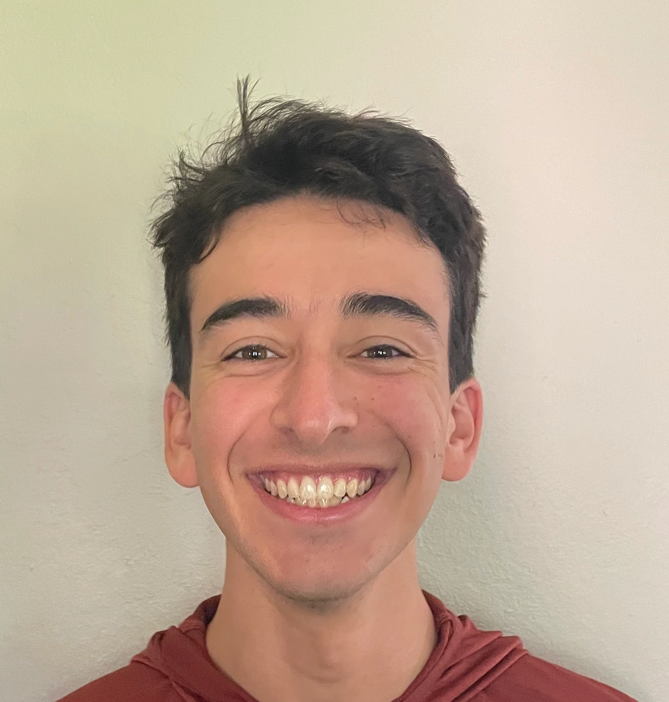

Eli Friedman

I'm a first-year PhD student at the University of Utah, where I am fortunate to be advised by Dr. Blair D Sullivan and Dr. Aditya Bhaskara. I'm interested in all sorts of algorithms on all sorts of graphs! Before Utah, I received my bachelor's degree from Dartmouth College, where I worked with the Algorithms and TCS at Dartmouth group.
The best way to contact me is by email: [first name].[last name]@utah.edu